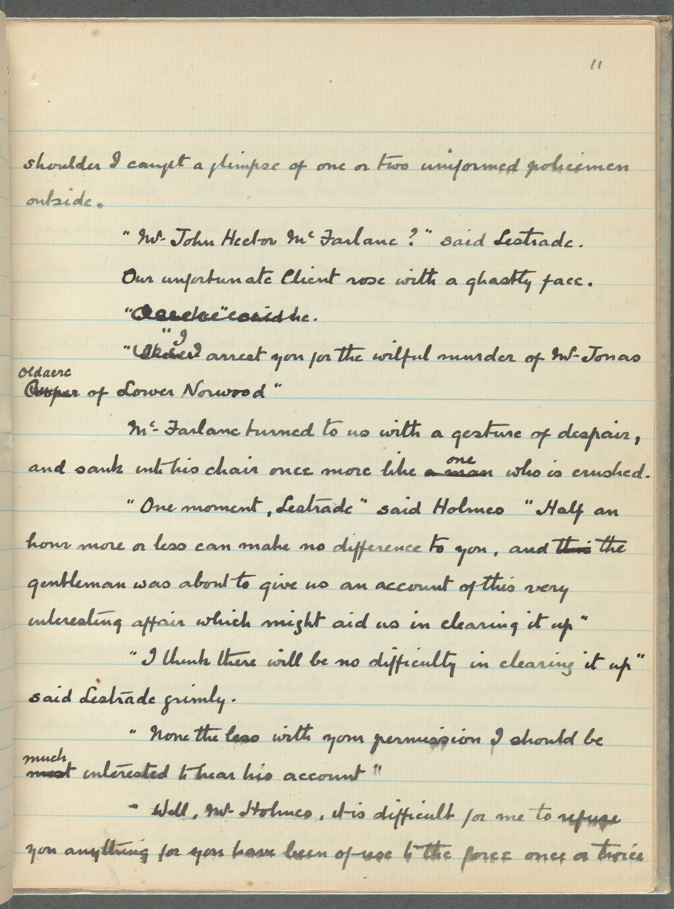

The Adventure of the Norwood Builder (Page 29)
Home
Pages
sample page number
The Return of Sherlock Holmes: No. 2. The adventure of the Norwood builder. Holograph
page_29
All text
Final text (only additions)
First draft (no edits)
